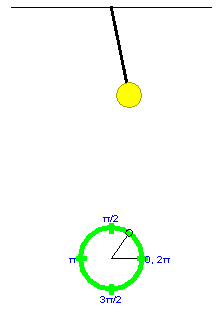
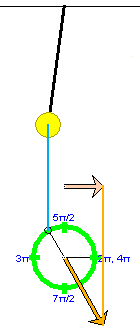
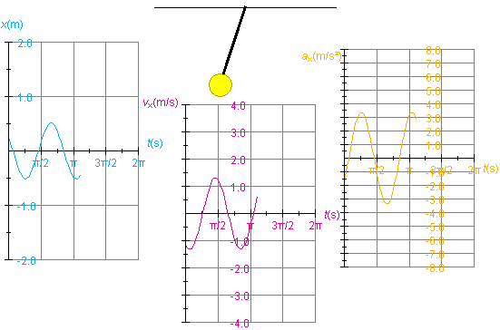
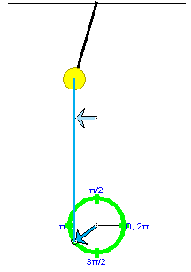
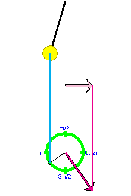
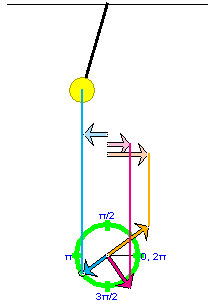
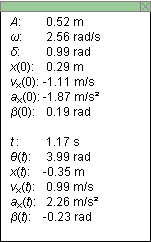

Instructions
This page is designed to get you started using the applet. The applet should be open. The step-by-step instructions on this page are to be done in the applet. You may need to toggle back and forth between instructions and applet if your screen space is limited.
 Observing the Motion of
a Pendulum
Observing the Motion of
a Pendulum
 The Motion of the
Pendulum as Projected Uniform Circular Motion
The Motion of the
Pendulum as Projected Uniform Circular Motion
 Graphs of Position, Velocity,
Acceleration vs. Time
Graphs of Position, Velocity,
Acceleration vs. Time
 Position, Velocity,
Acceleration Vectors
Position, Velocity,
Acceleration Vectors
Exercise 1. RESET the applet. The pendulum will be at rest and deflected to the right with an amplitude A = 0.17 m. The mass of the pendulum bob will be set to m = 0.50 kg (the string is assumed to be massless), the length from the suspension point to the center of the bob to L = 1.50 m, and the magnitude of the acceleration due to gravity to g = 9.8 m/s2. There are four sliders that let let you vary the quantities A, m, L, and g.
Display the Data box by pressing the Data toggle button  ,
and PLAY the motion.
,
and PLAY the motion.
Measure the period of the motion by PAUSE-ing the motion after one cycle and taking the time elapsed t from the Data box. The period is the time required for the pendulum bob to complete one full cycle, i.e., to move from the far right to the far left and back to the far right again.
REWIND the applet. Then PLAY the motion once more and measure the period once more. This time measure the time elapsed in several cycles and divide by the number of cycles to get the period.
In Exercises 2 to 5, you will be asked to examine the dependence of the pendulum's period on the four variables A, m, L, and g. (In the real world, you would have to go to the moon or to another planet to be able to study pendulum motion under conditions of different g.)
Exercise 2 - Amplitude
Continuing from Exercise 1, REWIND the applet and set the amplitude to A = 0.52 m. PLAY the motion, and measure its period. Compare the period to that found in Exercise 1 for A = 0.17 m.
Comment. You should find that the period is independent of the amplitude.
Exercise 3 - Mass
Continuing from Exercise 2, REWIND the applet and set the mass to m = 1.00 kg. PLAY the motion, and measure its period. Compare the period to that found in Exercises 1 and 2 for m = 0.50 kg.
Comment. You should find that the period is independent of the mass.
Exercise 4 - Pendulum Length
Continuing from Exercise 3, REWIND the applet and set the length to L = 2.00 m. PLAY the motion, and measure its period. Compare the period to that found in Exercises 1 to 3 for L = 1.50 m.
Comment. You should find that the period for L = 2.00 m is slightly longer than for L = 1.50 m. To get better values for the period, measure the time elapsed during ten uninterrupted cycles.
Exercise 5 - Acceleration Due To Gravity
Continuing from Exercise 4, REWIND the applet and set the magnitude of the acceleration due to gravity to g = 5.0 m/s2. PLAY the motion, and measure its period. Compare the period to that found in Exercise 4 for g = 9.8 m/s2.
Comment. You should find that the period for g = 5.0 m/s2 is slightly longer than for g = 9.8 m/s2. Again, to get a better measure of the period, time ten cycles rather than just one.

Exercise 1. RESET the applet, and display the green
reference circle by selecting the Reference Circle toggle
button  .
.
Set the amplitude to A = 0.52 m.
Move the mouse cursor onto the small grey circle (reference point) on the green reference circle. Initially, the reference point is at the point marked "0, 2π" on the green reference circle. When the cursor is over this point and has changed into a pointing hand, drag the reference point around the circle and observe how the pendulum's position changes accordingly. Alternatively, you can drag the pendulum bob, but this will allow you to move the reference point only in the upper half of the reference circle.
Move the reference point to approximately the position shown in Figure 1 below.

Figure 1
By moving the reference point in this manner, you can set the starting point of the motion of the pendulum. The angle formed between the two grey lines in Figure 1 is called the phase angle. Its value at the start of the motion at t = 0 is denoted δ (Greek letter; read: delta). Its value at time t is denoted θ(t). Thus, θ(0) = δ. The initial phase angle δ is also called the phase.
Exercise 2. Continuing from Exercise 1, PLAY the
motion and observe that the reference point on the reference
circle is always directly underneath the oscillating pendulum
bob. PAUSE the motion, and press the Projection toggle
button  .
.
A blue vertical line will connect the reference point to the center of the pendulum bob as in Figure 2 below. Ignore the acceleration vector (orange) in Figure 2 for the time being.

Figure 2
Resume the motion, and observe the correspondence between the uniform circular motion of the reference point and the oscillatory motion of the pendulum bob.
The projection of the pendulum bob's motion onto a horizontal axis (x-axis) is identical with the projection of the circular motion of the reference point onto this axis.
Comment. The preceding statement is true exactly for the simulation provided by the applet. In reality, it is true only to a good approximation. The approximation is the better the smaller the amplitude is. The approximation made when describing pendulum motion as projected circular motion is called the simple-harmonic-motion (SHM) approximation. Texbooks usually make this approximation when dealing with pendulum motions of small amplitudes, say, less than 10o.
Exercise 1. RESET the applet. Set the amplitude to A = 0.52 m, and set the phase δ to 1.00 rad. PLAY the motion, let it go through one complete cycle, and then PAUSE it at a point near that shown in Figure 3 below.

Figure 3
Display the position vs. time graph, x vs. t. The graph looks like that in Figure 3. x is the x-coordinate of the center of the pendulum bob, where the x-axis is horizontal with its origin at the equilibrium position of the pendulum (lowest point of the pendulum bob) and x increases to the right. The x-axis is illustrated in Figure 3, but the applet does not show the x-axis.
To display the graph, click on the Graphs toggle button  and check "Position" in the graph panel that opens
up.
and check "Position" in the graph panel that opens
up.
Observe that on the horizontal axis of the graph the time t is plotted in seconds (s). Don't be mislead by the unusual divisions labeled π/2, &pi, etc. These are in seconds, not in radians. Thus, the point where the y vs. t graph has completed its first cycle is approximately at t = 0.8π s = 2.51 s. The reason for dividing the time axis in this way is that the expression for the period T of the oscillating spring is
T = 2π (L/g).
(L/g).
The presence of π in this expression makes it natural to divide the time axis into segments that are multiples (or fractions) of π.
Observe also that the x vs. t graph in Figure 2 does not start with the maximum value of x at t = 0. This is so because the phase δ is unequal to zero. Also notice that the maximum x-value is equal to the amplitude, A = 0.52 m.
Exercise 2. Continuing from Exercise 1, display the velocity and acceleration vs. time graphs in addition to the position vs. time graph. Hide the reference circle so that there is enough room for all the graphs, and arrange the graphs as in Figure 4 below, from position vs. time on the left to acceleration vs. time on the right. In order to move the graphs, move one graph at a time by selecting only that graph's movability checkbox in the graph panel.

Figure 4
To make the graphs look as in Figure 4, select the Zoom
button  . Selecting this button has the effect of
reducing the height of the velocity graph by a factor of 2
and the height of the acceleration graph by a factor of 4
while leaving the position graph unchanged.
. Selecting this button has the effect of
reducing the height of the velocity graph by a factor of 2
and the height of the acceleration graph by a factor of 4
while leaving the position graph unchanged.
Erase the graphs, using the Reset button  in the
graph panel (not the main Reset button
in the
graph panel (not the main Reset button  ), REWIND the applet, and
PLAY the motion again drawing some fresh graphs.
), REWIND the applet, and
PLAY the motion again drawing some fresh graphs.
Exercise 1. RESET the applet, display the reference
circle, and open the vector panel by selecting the Vectors
button  .
.
Check "position" in the vector panel to display the position vector of the reference point on the reference circle. You may need to drag the vector panel upward to be able to see all of it.
Select the Components button  to display the horizontal component of this position
vector. This is also the position vector of the pendulum bob if
one neglects the slight vertical component of the pendulum bob's
motion.
to display the horizontal component of this position
vector. This is also the position vector of the pendulum bob if
one neglects the slight vertical component of the pendulum bob's
motion.
Set the amplitude to A = 0.52 m.
Display the vertical blue ting line projecting the reference
point onto the pendulum bob by selecting the Projectio
button .
PLAY the motion up to the point displayed in Figure 5 below.

Figure 5
Exercise 2. Continuing from Exercise 1, uncheck the "position" checkbox in the vector panel and check the "velocity at origin" checkbox. With the vertical projecting line still displayed and the Components button still selected, you should get the display shown in Figure 6 below.

Figure 6
PLAY the motion, and observe the velocity vector (in magenta) of the reference point and its horizontal component vector (in pale magenta) which is also the velocity vector of the pendulum bob (to a good approximation). PAUSE the motion.
Exercise 3. Continuing from Exercise 3, deselect the "velocity at origin" checkboxe in the vector panel and select the "acceleration at origin" checkbox instead to display the acceleration vector of the reference point in orange and its horizontal component vector in pale orange. The latter is equal (to a good approximation) to the tangential acceleration of the pendulum bob.
Note that the pendulum bob also has radial (centripetal acceleration). This radial acceleration is not a projection of the acceleration of the reference point moving in the green reference circle, and the radial acceleration is of no concern here where we are looking at the pendulum bob's motion as (approximate) simple harmonic motion along a straight line (the x-axis).
PLAY the motion, and observe the acceleration vector of the reference point and that of the pendulum. PAUSE near the position shown in Figures 5 and 6 above.
Exercise 4. Continuing from Exercise 3, display all three vectors (position, velocity, acceleration) and their horizontal component vectors, along with the vertical connecting lines. The result should look like Figure 7 below if you also select the Zoom button to reduce the lengths of the velocity and acceleration vectors by factors of 2 and 4, respectively.

Figure 7
PLAY the motion. Vary the display by hiding some features, e.g., the connecting lines or the reference circle or the component vectors.
Note the color coordination throughout the applet: position (blue), velocity (magenta), acceleration (orange).
Exercise 1. RESET the applet. Select the Data toggle
button .
Set the amplitude to A = 0.52 m. Display the green reference circle, and drag the reference point until the phase δ has a value close to 1 rad, as shown in the illustration of the Data box below.
PLAY the motion until the phase angle θ(t) has a value close to 4.0 rad. This should happen at a time close to t = 1.2 s if you did not change any of the applet's default settings other than that of the amplitude. Figure 8 below shows values close to the ones you should find displayed in your Data box.

Figure 8
The top half shows the constants and initial conditions for the motion, the bottom half the values of the variables at time t.
Click on the Data box, and drag it to a convenient location in the applet window.